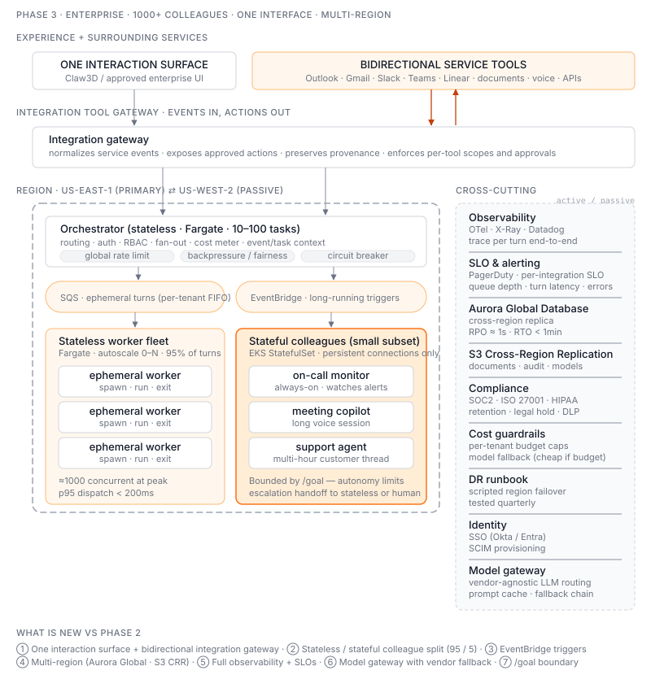

Phase 3 — Enterprise Reach & Resilience
Status: ⏳ Planned. The robust, scale-out version.

Goal
Run 1000+ digital colleagues across a 1000+ person company through one consistent interaction surface, while each colleague can receive work from and act through enterprise services with the HA, observability, compliance, and cost controls a real enterprise needs.
Scale targets
- 1000+ active colleagues
- 10k+ concurrent turns at peak
- 100k+ turns/day
- p95 turn latency < acceptable threshold (TBD per scenario)
- 99.9% control-plane availability
Interaction surface and integrations
Each deployment presents one approved human-facing surface — for example the Claw3D office, a web client, or an enterprise desktop shell. Employees do not pick a vendor channel before talking to a colleague.
Each colleague can use permission-scoped, bidirectional integrations:
- Outlook / Gmail — message events, search, send, reply, calendar actions
- Slack / Microsoft Teams — message events, read context, post or reply
- Linear / kanban — assignment and comment events, issue/status updates
- SharePoint / Google Drive / DMS — document discovery, read, create, update
- Webhooks / APIs — system events and approved business actions
- Voice / phone — future communication tool, not a second agent identity
Key insight: a new service adds something the colleague can observe or do; it does not add another way the user must operate the colleague. Service events and tool actions share the same identity, permission, approval, and audit boundary. See ADR-019.
What gets added vs Phase 2
- Integration tool gateway — one contract for inbound events and outbound actions
- Per-integration event queues — backpressure and failure isolation without changing the UX
- Long-running colleagues — for the small subset that needs persistent state (e.g. on-call monitor, always-on assistant), introduce a stateful runtime (probably k8s StatefulSet for those few, not all)
- Observability stack — distributed tracing across orchestrator → worker → tool calls
- Compliance — SOC2, ISO 27001, legal hold, data retention policies as code
- Cost guardrails — per-tenant LLM spend budgets, autoscale ceilings, alarms
- Multi-region — at least active/passive for DR
- Federated worker pools by location — a cloud pool plus, where data sovereignty requires it, an on-prem Linux pool inside the corporate network; edge pools pull work outbound, are never called into; agents never run on end-user machines. See ADR-014
What we explicitly avoid
- A microservice for every colleague — colleagues are data, not services
- Service mesh between agents — the orchestrator is the integration point
- Custom-built service transports when vendor SDKs are good enough
Open questions
- Stateful vs stateless colleagues — split the population, or one model fits all?
- Agent-to-agent calling at scale — does the file-based pattern still work, or do we need something more like a real RPC layer?
- How does
/goalintegrate as the autonomy boundary for long-running colleagues?